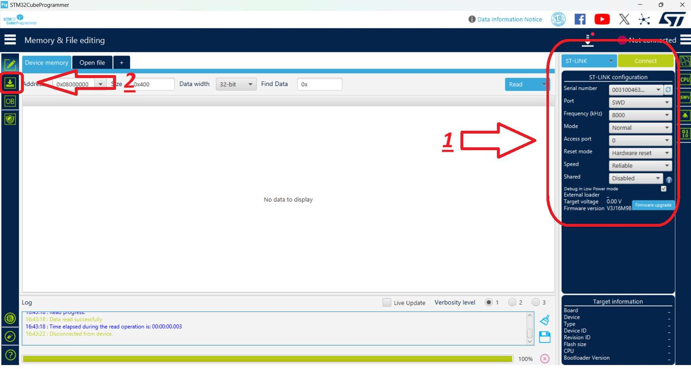
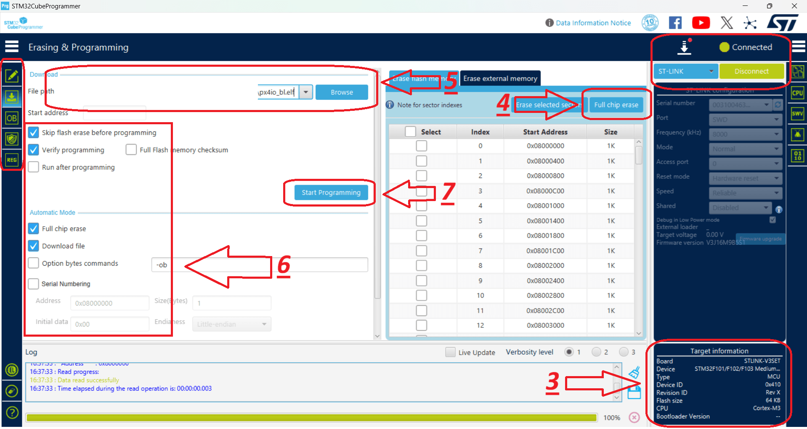
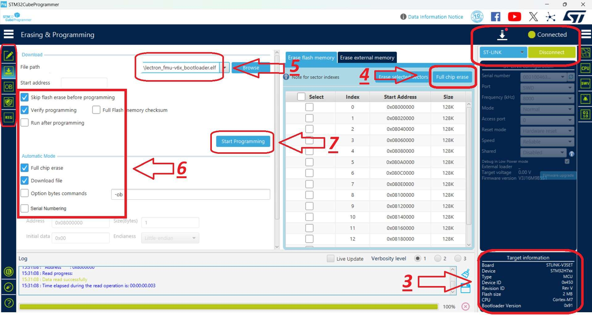
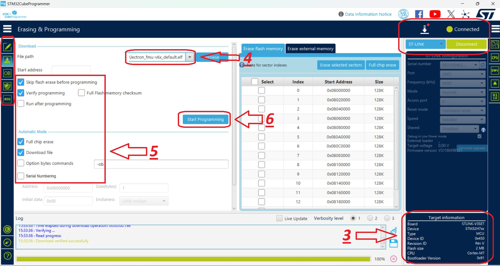

Initial Installation
Jetson Xavier NX — Flashing the Custom BSP
Flashing is done from a Linux host using a Docker container. The BSP targets Jetson Xavier NX on the Lectron carrier board (L4T R32.7.3 / JetPack 4.6.x, board config lectron-jetson-xavier-nx). Boot target is either the module’s internal eMMC or an external SD card.
Jetson Nano
The same procedure applies to Jetson Nano — replace lectron-jetson-xavier-nx with lectron-jetson-nano wherever it appears.
Requirements: Linux host with Docker and a mini-USB cable. SD-card option also needs a card reader.
1. Create the Container
export L4T_WORK="$HOME/l4t/work"
mkdir -p "$L4T_WORK"
sudo docker run -it --privileged \
--name l4t-flash \
-v /dev:/dev \
-v "$L4T_WORK:/work" \
ubuntu:18.04 bash
Re-entering
Use sudo docker start -ai l4t-flash to re-attach — don’t run docker run again.
Install dependencies inside the container:
apt-get update && apt-get install -y \
binutils perl python3 python3-pip libxml2-utils device-tree-compiler \
abootimg cpp sshpass udev dosfstools openssl uuid-runtime \
qemu-user-static binfmt-support libgmp10 bc liblz4-tool zip unzip \
cpio rsync xxd bzip2 lbzip2 whiptail wget nano sudo
ln -sf /usr/bin/python3 /usr/bin/python
pip3 install pycryptodome
2. Load the BSP
cd /work
wget https://github.com/lectronuser/lectron-public/releases/download/v1.0.0/Lectron_Jetson_Xavier_NX_BSP_R32.7.3.tbz2
tar -xpf Lectron_Jetson_Xavier_NX_BSP_R32.7.3.tbz2 --numeric-owner
cd /work/Linux_for_Tegra
./apply_binaries.sh
Other supported BSPs are available on the releases page.
3. Force Recovery Mode
Required before any flash operation.
- Press and hold both FRCV and RST buttons.
- Apply power while holding them; keep held ~10 seconds.
- Release RST first, then FRCV.
- Connect a mini-USB cable from the host to the JN USB0 port.
Confirm with lsusb — an NVIDIA Corp. entry means recovery mode is active.
4. Flash to eMMC
5. Flash to SD Card
5.1 Prepare the card (host card reader required — destructive, confirm device node first):
lsblk # identify your card, e.g. /dev/sdX
cd /work/Linux_for_Tegra
sudo ./prepare_sd_card.sh /dev/sdX
Remove the card from the reader when the script reports completion.
5.2 Flash the bootloader:
- Insert the prepared SD card into the board’s SD slot.
- Enter Force Recovery mode (Section 3).
6. First Boot
The module reboots automatically after flashing. Initial boot takes longer than usual. Use a FTDI module on the JN UART2 port for first-boot setup. Verify board customizations:
FMU Firmware Installation
This section contains step-by-step instructions for flashing the bootloader and firmware onto the FMU IO (F103) and FMU MAIN (H753) chips using STM32CubeProgrammer.
Wiring — Before You Start
Before the flashing process, make sure the debug cable and the ST-Link / CubeProgrammer pins are connected correctly:
The Autopilot board must be powered (via USB or XT30) before performing these steps.
ArduPilot vs. PX4
The FMU bootloader and FMU firmware files differ depending on the autopilot software (ArduPilot or PX4). The flashing procedure remains the same — only the target files change.
Connection Settings
Select the connection settings on the right-hand panel as shown below, then use the Connect button. After connecting, the target chip is shown in the bottom-right corner (STM32F10x for the IO chip, STM32H7 for the FMU chip).

1. IO Chip Flashing (F103)
Hardware Connections
- Connect the debug cable (10-pin GHS-10) to the IO debug port.
- Connect the ST-Link to the computer.
STM32CubeProgrammer Steps
- Launch STM32CubeProgrammer. Select the connection settings on the right panel and click Connect.
- Switch to the programming panel using the left-hand toolbar.
- After the ST-Link connects, verify that STM32F10x is displayed in the bottom-right corner.
- Click Full chip erase to wipe any existing code. In the confirmation pop-up ("Are you sure you want to erase full chip flash memory"), click OK.
- Select the provided IO bootloader file.
- Check the programming configuration options as indicated in the reference layout.
- Click Start Programming.

- Once complete, dismiss the "Download verified successfully" and "File download complete" alerts by clicking OK.
- The IO installation is complete.
- For safety, disconnect from the hardware by clicking Disconnect (which replaces the Connect button).
2. FMU Chip Flashing (H753)
This stage installs the Bootloader first, followed by the FMU Firmware.
Hardware Connections
- Connect the debug cable (10-pin GHS-10) to the FMU debug port.
- Connect the ST-Link to the computer.
FMU Bootloader Flashing
- Launch STM32CubeProgrammer and click Connect (top-right).
- Switch to the programming panel using the left-hand toolbar.
- After the ST-Link connects, verify that STM32H7 is displayed in the bottom-right corner.
- Click Full chip erase to wipe any existing code, then click OK on the confirmation pop-up.
- Select the provided FMU Bootloader file.
- Check the installation options as indicated in the reference layout.
- Click Start Programming.

- Once complete, close the "Download verified successfully" and "File download complete" prompts by clicking OK.
- The FMU Bootloader installation is complete.
- For safety, click Disconnect (top-right).
FMU Firmware Flashing
- Launch STM32CubeProgrammer and click Connect (top-right).
- Switch to the programming panel using the left-hand toolbar.
- Ensure that STM32H7 is displayed in the bottom-right corner as the target chip.
- Select the provided FMU Firmware file.
-
Check the programming options as shown in the reference image.
CRITICAL
Uncheck the Full chip erase box to prevent wiping the bootloader you just installed.
-
Click Start Programming to begin flashing the firmware.

- When the operation completes, confirm and close the "Download verified successfully" and "File download complete" alerts by clicking OK.
- The FMU Firmware installation is complete.